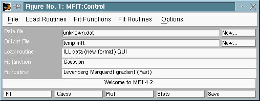
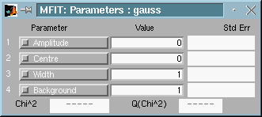

Version 4.2. (1999)

Fig 1 : Mfit : control window
The functions listed are those that Mfit read from the mfit.ini file when it started. Choose the function you want by clicking on it. You can choose an unlisted function by choosing 'Other...' and then using the dialog that appears to tell Mfit about your function. Mfit show the currently selected fit function in the control window. It is possible to build a more complex function (such as a gaussian plus a lorentzian, convoluted with an experimental resolution function) with the multifunction feature.
If Mfit successfully loads the fit function, it opens a parameters window which shows the values of the parameters associated with the particular function. The parameters windows looks something like this:

Fig 2 : Mfit : parameter window
The number and names of the parameters of course depends on the function you chose, and the boxes will be blank when you first load a function.
Next: Fitting.
See also: Mfit batch files
,
The
mfit.ini file , Building
a complex fitting function , How to write
fitting functions.